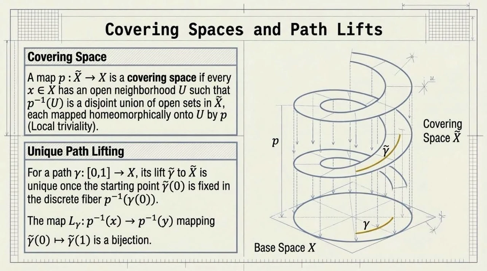

기둥 3 · 움직임 · 19장
덮개 공간과 길 들어올리기 — 나선형 주차장
바닥 바로 위에는 「이산적인」 층들이 있다
바닥 바로 위에는 「이산적인」 층들이 있다
핵심 질문 — 바닥 위를 도는 길을 나선형 주차장의 위층 길로 「들어 올리면」 무엇을 알 수 있을까?
15장에서 수직선을 1씩 접으면 원이 됐어요. 거꾸로 보면, 수직선은 원을 끝없이 감아 올린 나선이에요. 이런 「감아 올린 공간」이 덮개 공간이에요. 바닥의 한 점 바로 위에 있는 점들(올)은 서로 뚝 떨어진 이산 위상의 점들이에요 — 이산이 다시 주인공으로 나와요.
숫자 요약은 이 장의 예시 계산에서 나온 값입니다(실제 데이터가 아닌 설명용 값).
바람조 발표예요. 주제는 나선형 주차장!
빙글빙글 올라가는 주차장, 다들 타 봤죠?
한 바퀴 돌면 한 층 올라가요!
행렬·벡터, 복잡한 공식을 몰라도 됩니다. 그림을 움직여 보고, 밑줄 친 말을 누르면 뜻이 나옵니다.
이 페이지 사용법: 밑줄 친 말을 누르면 뜻이 나옵니다(Esc로 닫기). 단계마다 그림을 직접 움직여 보고, 끝의 확인 퀴즈로 점검하세요. 앞 장: 18 격자와 모듈러 군 — 타일 넓이는 행렬식
바람조가 「나선형 주차장 = 원의 덮개」를 발표하고, 픽셀조가 「길을 들어 올리면 어느 층에 도착하나」를 질문해요.
바닥의 작은 호를 잡으면, 그 위에는 층마다 따로 떨어진 호 조각이 하나씩 있어요.
그럼 층 사이를 갑자기 건너뛰는 길은요?
연속인 길은 층을 건너뛸 수 없어. 그래서 들어 올린 길이 하나로 정해져.
올(바닥 한 점 위의 점들)은 이산 공간이에요. 이산 위상이 연속 공간의 구조를 세는 데 쓰여요.
들어 올린 길의 도착 층이 감은 수예요. 20장 기본군의 출발점이에요.
접기(위 → 아래)와 덮개(아래 → 위)는 같은 그림을 반대로 본 거예요.
주차장 그림 하나로 충분해요. 「한 바퀴 = 한 층」만 붙잡고 가세요.
상황 질문 — 나선형 주차장의 한 기둥 바로 위에는 층마다 주차 자리가 하나씩 있어요. 이 자리들은 서로 이어져 있을까요?
p⁻¹(U)의 −1은 「1분의」라는 뜻이에요?
학교 수학으로 보면: 중학교 「역함수」 기호와 비슷하지만 여기서는 「p로 내려서 U에 떨어지는 위층 점을 모두 모은 것」이라는 뜻이에요. 나누기가 아니에요.
| 식 조각 | 읽는 법 | 뜻 |
|---|---|---|
| p: X̃ → X | 피, 엑스 물결에서 엑스로 | 위층을 바닥으로 내리는 지도 |
| p⁻¹(x) | 피 역 엑스 | 점 x의 올 (x 바로 위의 점들) |
| 국소적으로 자명 | — | 작은 동네 위에서는 층들이 따로 떨어진 복사본 |
나선 X̃ = 수직선 ℝ, 바닥 X = 둘레 1인 원, p(t) = t를 원에 감은 자리
바닥 점 0의 올 = {…, −1, 0, 1, 2, …} (정수 전체)
바닥의 작은 호 (−0.1, 0.1)의 위 = (−0.1, 0.1), (0.9, 1.1), (1.9, 2.1), … — 층마다 따로 떨어진 조각
올 {0, 1, 2, …} 안에서 각 점은 혼자 떨어진 섬 → 이산 위상
바닥 점 하나 위의 층들이 이산 공간이라니, 주인공이 또 나왔네요!
나선형 주차장 기둥 바로 위의 주차 자리들은 층마다 하나씩, 위아래로 뚝 떨어져 있어요. 짧은 구간만 보면 층마다 바닥과 똑같은 길이 하나씩 있어요.
덮개 공간 p: X̃ → X에서 바닥 점 위의 올 p⁻¹(x)는 이산 위상 공간이에요. 나선(ℝ)은 원의 덮개이고, 올은 정수 ℤ와 같아요.
바닥 점 위의 파란 점들(올)을 보세요. 몇 개이고, 어떻게 놓여 있나요?
층마다 하나씩, 끝없이 많아요!
그리고 서로 떨어져 있어. 그게 「올은 이산」이라는 뜻이야.
원자료 「Covering Spaces and Path Lifts」 위 상자와 나선 그림.

상황 질문 — 나선형 주차장에서 바닥 평면도를 보며 한 바퀴 반을 돌았어요. 0층에서 출발했다면 지금 몇 층일까요?
경사로를 운전할 때 바닥 평면도로는 같은 자리여도, 출발 층과 돈 바퀴 수를 알면 도착 층이 딱 정해져요.
길 들어올리기: 바닥 길 γ: [0, 1] → X와 출발점 γ̃(0) ∈ p⁻¹(γ(0))이 정해지면 위층 길 γ̃가 유일해요. 지도 L_γ: γ̃(0) ↦ γ̃(1)은 올 사이의 일대일 대응이에요. 원을 한 바퀴 돌면 0층 → 1층, 1층 → 2층, …
바퀴 수를 1, 1.5, 2로 바꿔 보세요. 0층에서 출발하면 어디에 도착하나요?
한 바퀴 돌면 바닥에선 제자리니까 위에서도 0층이죠!
위층에선 한 층 올라가 있어. 바닥의 「제자리」가 위층의 「제자리」는 아니야.
원자료 아래 상자 「Unique Path Lifting」과 L_γ.
시아가 AI에게 「나선 덮개에서 0층에서 출발해 바닥 원을 한 바퀴 돈 길을 들어 올리면 어디에 도착하나요?」라고 물었어요.
AI가 「아래에서 그러니 위에서도 그렇다」고 말하면, 바로 그 「옮겨 가기」가 성립하는지 그림 하나로 확인하세요.
나선형 주차장에서 0층 출발, 바닥 한 바퀴 길의 도착 층을 두고 맞붙었어요.
「1층. 한 바퀴마다 한 층 올라가.」
「바닥에서 제자리로 돌아왔으니 위층에서도 0층!」
누가 맞을지 먼저 예상해 보고 단추를 누르세요. 판정은 계산 결과로만 합니다.
개념정리 흐름: 덮개 공간 → 길 들어올리기
| 개념 | 한 줄 뜻 | 일상 비유 | 비유의 한계 |
|---|---|---|---|
| 덮개 공간 | 동네마다 바닥 복사본이 따로 쌓인 공간 | 나선형 주차장 | 꼭짓점에서 층이 붙으면 덮개가 아님 |
| 올 | 바닥 점 바로 위의 점들 — 이산 공간 | 같은 자리 층들 | 올의 점 수 = 덮개의 겹 수 |
| 길 들어올리기 | 출발 층을 정하면 위층 길이 하나 | 경사로 운전 | 연속인 길만 |
바람조 발표 통과! 주판봇의 「0층」은 좋은 반례였어요.
바닥만 보고 판단했네요…
한 바퀴 = 한 층! 다음엔 층을 통째로 옮겨 봐요.
다음 장 예고: 20장은 계산배틀이에요. 덮개 전체를 미끄러뜨리는 「층 바꾸기」(덱 변환)와, 덮개와 부분군을 짝짓는 갈루아 대응을 봐요.